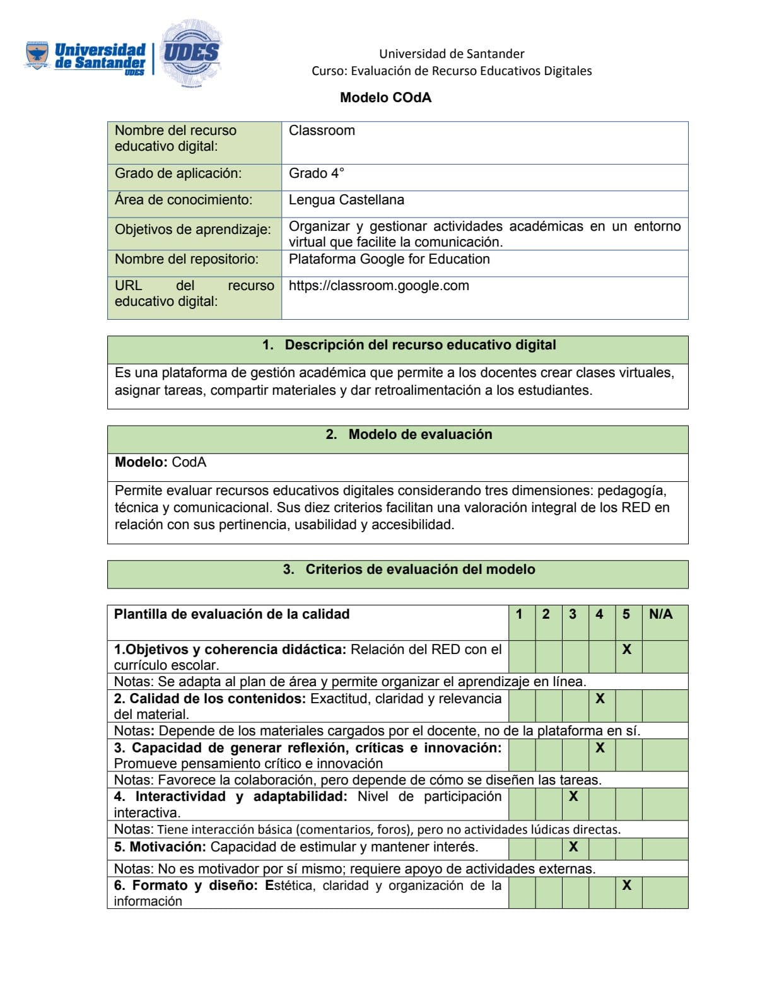
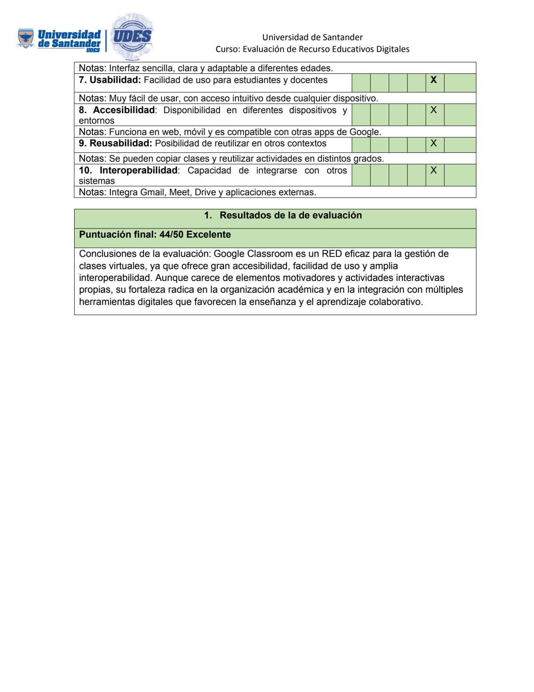

A continuación, se presentan tres modelos seleccionados por su pertenencia para la evaluación RED, incluyendo el instrumento que utilizan y su justificación.
-
Modelo REEVES
- Instrumento: Matriz de evaluación basada en dimensiones pedagógicas, tecnológicas y de diseño.
- Justificación: Se adapta muy bien a objetos de aprendizaje digitales. Permite un análisis integral y equilibrado entre lo técnico y lo didáctico. Es útil en contextos donde se requiere evaluar calidad educativa con enfoque constructivista.
-
Modelo COdA
- Instrumento: Planilla de evaluación de calidad con 10 criterios.
- Justificación: Este modelo es claro, detallado y fácil de aplicar tanto en autoevaluación como en revisión por pares. Su enfoque en Objetivos de Aprendizaje y buenas prácticas lo hace ideal para entornos educativos digitales.
-
Modelo SREB-SCORE
- Instrumento: Planilla de evaluación según las guías del SREB.
- Justificación: Es un modelo estandarizado y validado por múltiples instituciones educativas. Es útil para clasificar y seleccionar recursos digitales de alta calidad, considerando aspectos clave como accesibilidad, usabilidad y derechos de autor.
-
Recurso Educativo Digital (RED): Educaplay
- Área de conocimiento: Transversal – se puede aplicar en lenguaje, matemáticas, ciencias, geografía, idiomas, etc.
- Nivel del grado de aplicación: Educación básica y media (primaria y secundaria).
- Datos del autor: Educaplay es una plataforma desarrollada por ADR Formación, empresa española de e-learning.
- Enlace al repositorio: https://www.educaplay.com
- Descripción: Educaplay es una plataforma para la creación de actividades educativas interactivas como sopas de letras, crucigramas, juegos de relación, test de opción múltiple, mapas, dictados, entre otros. Permite integrar contenido multimedia y evaluar automáticamente a los estudiantes.
-
Características:
- Variedad de actividades interactivas.
- Fácil de usar para docentes y estudiantes.
- Retroalimentación inmediata.
- Posibilidad de compartir por enlace o incrustar.
- Compatible con múltiples dispositivos.
- Exportación e integración con plataformas educativas (LMS).
-
Limitaciones:
- Algunas funciones requieren suscripción premium.
- Requiere registro para guardar progreso y resultados.
- No todos los juegos tienen control del orden o dificultad de contenido.
- Verificación de estándares: Educaplay permite diseñar actividades alineadas con estándares curriculares, ya que el docente define los contenidos, los objetivos de aprendizaje y el tipo de evaluación integrada en cada recurso.
-
Evaluación con modelos seleccionados: El RED
Educaplay puede ser evaluado con los modelos seleccionados
(COdA, REEVES y SREB-SCORE) ya que cumple criterios como
interactividad, alineación con objetivos de aprendizaje,
usabilidad y diseño accesible.
- COdA: Permite valorar los criterios de calidad.
- REEVES: Analiza el impacto educativo.
- SREB-SCORE: Evalúa la conformidad con estándares, motivación y derechos de autor.
- Área de conocimiento: Lenguaje Castellana
- Nivel del grado de aplicación: Educación básica
- Datos del autor: Google for Education
- Enlace al repositorio: https://classroom.google.com
- Descripción: Plataforma de gestión del aprendizaje (LMS) que permite organizar cursos, distribuir tareas, evaluar y dar retroalimentación en línea.
-
Características:
- Gestión centralizada de tareas y materiales
- Comunicación fluida entre docentes y estudiantes.
- Integración con Google Drive, Docs, Meet, etc.
- Acceso multiplataforma.
-
Limitaciones:
- Requiere conexión estable a Internet.
- Interfaz poco personalizable.
- Limitado en recursos multimedia interactivos
- Verificación de estándares: Cumple con requisitos de accesibilidad y organización curricular.
-
Evaluación con modelos seleccionados: Puede
analizarse con COdA, REEVES y SCREB-SCORE en criterios
pedagógicos, técnicos y comunicativos.
- COdA: Permite valorar los criterios de calidad.
- REEVES: Analiza el impacto educativo.
- SREB-SCORE: Evalúa la conformidad con estándares, motivación y derechos de autor.
 